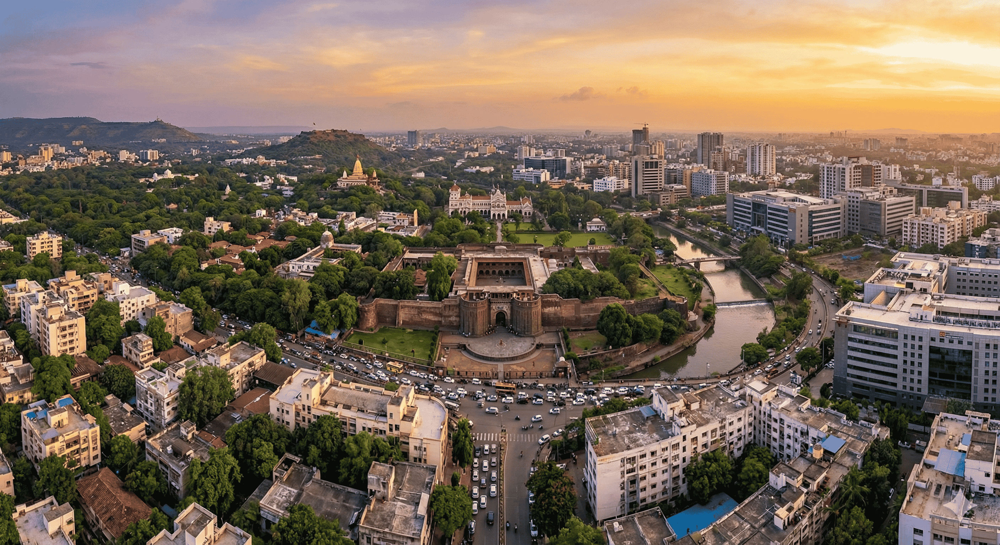

Pune is a major city in the state of Maharashtra, India, situated on the Deccan Plateau near the western margin of the Sahyadri Hills. It is located at the confluence of the Mula and Mutha rivers, at an altitude of 560 meters (1,837 feet). Pune is known for its pleasant climate, rich history, and as a hub for education, business, and IT.
Area: Approximately 516.18 Square Kilometres
Pune, historically significant as a Maratha Empire hub and later under Peshwa rule, is now a major metropolitan city known for its rich cultural heritage, educational institutions, and burgeoning industrial sector. It's often called the "Oxford of the East" and the "Cultural Capital of Maharashtra".
Summer: March–May (up to 40°C)
Monsoon: June–Sept (Moderate/Heavy)
Winter: Nov–Feb (Low as 8°C)
Best Time: October to February
Time Zone: IST (UTC +5:30)
Population: ~7.4 Million
Languages: Marathi, Hindi, English
Literacy: 86.15%
Republic Day: 26th Jan
Independence Day: 15th Aug
Gandhi Jayanti: 2nd Oct
Police: 100
Fire: 104
Ambulance: 108
Gen Info: +91 88888 88888

Pune’s rental market has recently seen steady growth—driven by metro expansion and rising IT demand—with rental rates increasing up to ~30% since 2021 in key areas, especially those near upcoming metro lines.
The city remains a landlord-favoured market, where preferred expat/local professional areas command premium rates and limited availability. Transportation and traffic vary greatly—it's advisable for expats to use a car, driver, or chauffeur-driven service.
Preferred residential areas include Koregaon Park, Kalyani Nagar, Viman Nagar, Baner, Kharadi, Hinjawadi, Aundh, Wakad, and Kothrud. These localities offer strong infrastructure, green spaces, cafés, schools, hospitals, and solid connectivity to workplaces and the airport. Some of the newer expat clusters are emerging in Wakad and Baner due to metro developments and IT corridors.
A number of premium serviced-apartment blocks and hotels exist in central Pune and areas like Koregaon Park and Kalyani Nagar. It’s recommended to book well in advance during peak seasons (festivals or summer move-ins), as demand exceeds availability.
Most flats and villas in these areas are within gated communities offering safety, maintenance, back-up power, and amenities like pools, gyms, and clubhouses.
Independent houses/villas offer more space and privacy but typically require private security arrangements and self-maintenance.
Integrated villa communities combine the benefits of gated living with independent house privacy.
Breakdown of available properties:
Availability: Moderate to Good (varies by area
– more availability in Baner, Aundh, Kharadi, and outskirts).
Types: Detached (~25%), Semi-detached
(~75%).
Style: Modern and traditional bungalows with
3–4 bedrooms, attached bathrooms, separate kitchen, and living +
dining areas. Many come with a small garden or backyard.
Average Age: 10–20 years.
New Construction (<5 years): ~15% in newer
townships like Hinjawadi Phase 2, Wagholi, Mahalunge, and Baner.
Availability: Good. (60–65% in small buildings,
35–40% in large apartment complexes/high-rises).
Style: Typically 2–3 bedroom configurations
with attached bathrooms, a fair-sized master bedroom, modular
kitchens, and combined living + dining spaces. Many offer
balconies with city or garden views.
Average Age: 5–10 years.
New construction (5 years or less): ~20%.
The unique quality of housing in Pune is that you will find residential options across all budget categories—from economical flats to premium serviced apartments and high-end penthouses—within almost every major neighbourhood. Most areas are dotted with parks, jogging tracks, gardens, and recreational spaces ideal for families.
It is advisable to visit shortlisted neighbourhoods at different times of the day to assess traffic flow, noise levels, parking availability, and travel time to key locations.
There are several options available in expat-friendly areas like Koregaon Park, Kalyani Nagar, Viman Nagar, Baner, and Hinjawadi. They are classified into:
A. Professionally Run Serviced Apartments
These are fully-managed buildings or blocks operated by
professional companies.
• Found in premium locations (e.g., Koregaon Park, Kharadi,
Baner).
• Offer dedicated housekeeping, reception, security, and
maintenance teams.
• Often include amenities like Wi-Fi, laundry, kitchenettes,
parking, and 24/7 power backup.
• Suitable for expatriates, corporate travellers, and families
in transition.
B. Stand-Alone Serviced Apartments
This format is growing in popularity in Pune, especially around
IT hubs.
• Usually individually owned or managed by small operators.
• Quality and consistency may vary significantly.
• Limited support staff; amenities like Wi-Fi or kitchenware may
not be standard.
• Not part of an organized sector—careful vetting is recommended
before booking.
C. Guest Houses / Shared Accommodations
These are often homes converted into lodging spaces with shared
kitchens and living areas.
• Rooms are rented individually, and common facilities are
shared.
• Typically used by interns, short-term visitors, or budget
travellers.
• Not recommended for expatriates or families due to privacy,
security, and hygiene concerns.
In Pune, it is a standard procedure to give 2 to 5 months’ rent as a security deposit, depending on the locality and landlord preference. The security deposit is interest-free and refundable at the end of the lease term.
Location plays a vital role in choosing the right place to live. Consider carefully some of the following:
Check well if the rental quoted is inclusive of apartment associated maintenance costs. If the Landlord is providing you with utility connections, the set-up cost is borne by the Landlord, and the monthly rental and usage charges are borne by the Tenant. The monthly payment will have to be made directly to the vendors. Please note that there is always a due date for making payments.
The furniture available for lease is usually pre-owned, and availability varies. There is no guarantee on specific variety as it changes over time. You can reach out to Kraft Mobility for detailed information.

Pune offers a robust banking sector with major international and national banks. We assist with opening bank accounts, understanding local tax regulations, and currency exchange services to ensure your financial transition is smooth.
The official unit of currency in India is the Indian Rupee (INR).
Credit cards are widely accepted in Pune, particularly in malls, restaurants, hotels, and retail stores. Most banks issue credit cards with revolving credit and cash advance features.
The most commonly accepted cards are RuPay, VISA, and MasterCard. American Express and Diners Club cards are accepted only at selected establishments.
It is recommended to check with the merchant in advance before using a foreign-issued card.
Note: International cards may attract foreign transaction fees. Please check with your home bank for exact charges.
Pune has a well-connected ATM network that covers all major residential and commercial areas.
Traveller’s cheques are available through most major banks, both Indian and foreign.
Commonly available currencies include US Dollar, Euro, and Pound Sterling.
To buy or encash traveller’s cheques, a valid passport must be presented.
Banks in Pune are divided into government (public sector) and private banks, including both local and international institutions.
Typical Banking Hours:
Government banks: 10:00 – 14:00 (weekdays)
Private banks: 08:00 – 20:00 (weekdays)
Some private banks also operate on Saturdays.
As a foreign national employed in India, you are permitted to open only one bank account per city, as per Indian Foreign Exchange and Income Tax laws.
Your relocation consultant or HR partner may assist you in opening one of the following account types:
Document requirements may vary slightly by bank, but typically include:
Most banks issue an ATM/debit card upon request. The account opening process usually takes 2 to 15 working days, depending on documentation and KYC verification.
All major banks in Pune offer internet and mobile banking services, allowing users to perform:
Internet banking is generally secure and user-friendly, with 24/7 support and app-based services provided by most leading banks.

Water-borne diseases such as hepatitis A, typhoid, dysentery, and diarrhea spike during the monsoon due to contaminated water and poor sanitation. A notable surge in hepatitis A cases was observed between March–June 2025.
Vector-borne illnesses including dengue, malaria, chikungunya, and other infections such as scrub typhus are prevalent during and after the monsoon season.
Respiratory illnesses frequently escalate due to worsening air quality, including cases of asthma, COPD, and influenza-like illnesses (H1N1, H3N2), especially during winter months. AQI data indicates a decline in clean-air days, contributing to increased health risks.
Open burning of garbage in neighbourhoods continues to add to harmful air pollution and increases the respiratory disease burden.
In case of a medical emergency, knowing the closest hospital is critical. While Pune traffic is generally manageable, delays can occur during peak hours or in areas affected by metro construction.
It is often faster to use your own vehicle or hire an auto/cab rather than waiting for an ambulance, unless the patient is immobile.
It is recommended to have someone accompany you to the hospital to assist with registration, payments, or form-filling. Most private hospitals require partial payments at the time of admission.
Always carry personal identification such as a passport, visa copy, or resident permit.
Doctors, clinics, and hospitals are easily accessible throughout Pune. The city is home to several reputed multi-specialty hospitals offering advanced healthcare services at comparatively affordable costs.
Communication with doctors is generally smooth, as most speak fluent English and Hindi. Private hospitals are recommended for faster and more personalized care.
Pune has a wide network of general physicians, specialists, and wellness clinics. When choosing a doctor, consider their affiliated hospital for easier admission during emergencies.
Medications are easily available over the counter at most pharmacies, which are present in every neighbourhood. Many pharmacies also provide home delivery services.
It is advisable to carry prescriptions, especially for ongoing treatments, and inform your doctor about any medications you are currently taking.
Government Emergency Ambulance: 102
Private Ambulance Services (24x7):
Police Emergency Number: 112

Education in Pune spans from Kindergarten through Higher Secondary. Schools are affiliated with several education boards.
The Maharashtra State Board of Secondary & Higher Secondary Education (MSBSHSE) oversees SSC (Class 10) and HSC (Class 12) examinations. This state board is headquartered in Pune and serves over 10,000 schools.
National and international boards present in Pune include CBSE, CISCE (ICSE/ISC), NIOS, IB, and Cambridge (IGCSE).
After Class 10, students typically join Junior College (PUC) or schools offering +2 courses under the state or national boards. This is followed by higher education programs in colleges, universities, and vocational institutions.
Expatriate and globally minded families have several excellent schooling options:
Under Maharashtra’s implementation of NEP 2020, all schools follow a three-language policy: Marathi (mandatory), English, and another Indian language of choice.
The State Curriculum Framework (SCF) mandates community integration in learning. Students’ involvement in local heritage, crafts, and environmental activities forms part of assessments through School Management Committees.
Electricity in Pune is primarily supplied by Maharashtra State Electricity Distribution Company Limited (MSEDCL / Mahavitaran), and in some areas by Tata Power or Adani Electricity.
Tip: Consult your relocation coordinator or landlord to identify your area’s electricity provider and nearest payment office.
Residents of independent houses or bungalows receive monthly water bills from Pune Municipal Corporation (PMC) or PCMC, depending on location.
Tip: Contact your relocation coordinator or landlord to confirm the water authority and nearest payment office.
Garbage is collected door-to-door daily in most Pune localities by PMC-appointed staff. In gated communities, collection is usually managed by the Society Maintenance Office.
Waste segregation into wet and dry garbage is commonly required by residential societies.
For complaints or missed pickups, contact the
PMC Solid Waste Management Helpline:
1800 1030 222 (Toll-free)
Most households in Pune use bottled LPG cylinders supplied by government-authorized agencies such as:
Cost: ₹900 – ₹1100 per cylinder (subsidized or market rate). A minimum of two cylinders is recommended for uninterrupted usage.
Documents Required: Identity proof, address proof, and passport-sized photograph.
Delivery Time: Usually 1–4 days after booking. Booking can be done via phone call, SMS, or mobile apps specific to the gas provider.
Due to Pune’s warm climate, regular pest control is advisable for insects such as ants, cockroaches, and mosquitoes.
Common Services:
Recommended Frequency: Once every 3–6 months. Ensure service providers use WHO-approved chemicals, especially if you have children or pets.

In Pune, once you move into your new residence, a local cable service provider from the area will typically reach out or can be easily contacted for a new connection.
A nominal installation charge is generally applicable, and the connection is usually set up within 1–2 days. Monthly subscription charges can be paid in cash or via online payment modes, and a payment receipt is issued.
Most cable operators in Pune provide access to a wide range of popular channels including STAR, Sony, Colors, ESPN, National Geographic, Discovery, along with regional channels in Marathi and Hindi.
For a complete list of available channels, it is advisable to contact your local cable operator directly.
Alternatively, Direct-To-Home (DTH) satellite services are widely available across Pune. Popular providers include:
DTH services require a one-time setup fee covering the dish antenna, set-top box, and a monthly or annual subscription package.
Installation typically takes 2–5 working days, depending on technician availability.
DTH providers offer a wide range of standard and HD channels in multiple languages, and channel packs can be customized based on individual preferences. For updated channel packages and pricing, contact the respective service provider.
Pune offers a wide range of FM radio stations catering to diverse musical tastes and local interests. These stations are freely accessible and can be tuned using any standard FM radio set or mobile phones with radio capability.
Popular FM channels in Pune include:
These stations broadcast Bollywood hits, indie music, talk shows, traffic updates, and local news, offering round-the-clock entertainment and information without any subscription cost.
Pune offers a variety of daily newspapers in English, Marathi, and Hindi.
Popular English dailies include The Times of India, Indian Express, and Hindustan Times. Marathi readers commonly prefer Sakal or Lokmat.
You can access newspapers in the following ways:
Pune has a well-connected network of post offices across residential and commercial areas, offering a wide range of communication and mailing services for individuals and businesses.
Postal services available include:
For detailed information on service availability, charges, and working hours, please visit your nearest local post office.

Telephone and broadband connections in Pune are available through both government and private service providers.
The government-owned provider BSNL and private operators such as Jio, Airtel, and Vodafone offer landline and broadband connections across most residential and commercial areas.
Private providers generally complete installation within 2–5 days, while BSNL installations may take up to 14 days.
Documents Required:
A refundable security deposit and installation fee are applicable. Billing is done on a monthly basis, and timely payment is essential to avoid service disconnection.
Landline connections with international calling facilities can be activated upon request.
Service providers offer multiple prepaid and postpaid plans, and bills can be paid online or at authorized customer service centers.
In some cases, landlords may provide a pre-installed landline, in which case only usage charges apply.
Public phone booths with PCO / STD / ISD facilities are now extremely rare in Pune, as mobile phones have largely replaced them.
Pune has strong mobile network coverage with major GSM service providers such as Jio, Airtel, and Vodafone.
These providers offer a wide range of prepaid and postpaid plans to suit different usage requirements.
Postpaid connections typically require a nominal security deposit and activation fee. An additional deposit may be required for international roaming.
Prepaid SIM cards are easily available at local mobile shops throughout the city.
As per government regulations, activation of a new mobile connection requires submission of a valid photo ID and proof of address.
Internet connectivity in Pune is provided by major companies such as Airtel, Jio, Tata Fiber, and BSNL.
Broadband connections are primarily delivered through fiber-optic networks or wired telephone lines.
After finalizing your residence, it is important to check area-specific coverage with your preferred provider.
A wide range of internet packages is available based on speed and data usage, catering to both household and business requirements.

Pune, one of Maharashtra's major cities, offers a range of transportation options for both locals and expatriates. The city is moderately well connected through cabs, auto rickshaws, local buses, and metro rail (limited routes).
For expatriates and business travelers, app-based cab services such as Ola, Uber, and InDrive are recommended for safety, convenience, and ease of communication. These services are accessible via mobile applications and offer various vehicle categories based on comfort and budget.
Several cab aggregators in Pune provide reliable, metered rides across the city. Ola, Uber, and InDrive are widely used due to GPS tracking, digital payment options, and ease of booking.
It is advisable to avoid unlicensed taxi operators, especially late at night. As many drivers may not speak fluent English, keeping your destination pinned on a map or written down is helpful.
Auto rickshaws are a common mode of transport in Pune. These are officially metered vehicles, although drivers may attempt to negotiate flat fares during peak hours or after dark.
By law, meters must be used and passengers should insist on meter-based fares. After 10:00 PM, drivers may charge 1.5 times the standard fare.
If the meter is faulty or refused, it is advisable to agree on the fare before starting the journey.
Public buses in Pune are operated by the Pune Mahanagar Parivahan Mahamandal Limited (PMPML). These buses connect most areas of the city and are an economical option.
While many buses are non-air-conditioned and can be crowded, AC buses operating under the Rainbow BRTS are more comfortable. However, for expatriates unfamiliar with local routes and languages, buses may not be the most convenient choice.
The Pune Metro is currently under development, with a few routes operational, including:
Although metro connectivity is presently limited, the system is expected to significantly reduce traffic congestion and evolve into a reliable urban commuting option.
Name: Pune International Airport
Location: Lohegaon, approximately 10 km from
the city centre
Connectivity:
Official Website: Pune International Airport
Pune has several international and local car rental companies offering both self-drive and chauffeur-driven options.
Some popular providers include:
While self-driving is available, Pune’s traffic conditions, narrow roads, and unpredictable driving culture can be challenging for newcomers. Chauffeur-driven rentals are strongly recommended.
Employees whose organizations have tie-ups with rental agencies may be eligible for discounted corporate rates.
Driving in Pune can be difficult due to irregular traffic patterns, lack of lane discipline, frequent congestion, and inconsistent road conditions.
If you are unfamiliar with Indian driving practices, it is advisable to hire a driver or use chauffeur-driven vehicles.
Foreign nationals may drive in India using a valid International Driving Permit (IDP) along with their national driving licence for a limited duration.
For long-term stays, applying for an Indian driving licence is recommended.
Importing a vehicle into Pune is legally permitted but involves strict regulations, a lengthy compliance process, and heavy import duties of approximately 150%.
If purchasing a vehicle locally, consider the following:

Indian nationals and foreign nationals, including persons of Indian origin, transferring their residence to Pune or arriving for employment are permitted to import personal effects and household goods into India free of duty, subject to specific conditions.
For Indian nationals, the following conditions must be met:
For foreign nationals relocating to Pune, a valid Employment Visa with a minimum duration of one year is mandatory.
Upon arrival, foreign nationals must register with the Foreigners Regional Registration Office (FRRO) in Pune and obtain a Residential Permit, which is a key document required for customs clearance.
The original passport must be presented during the customs clearance process.
If shipments are delayed beyond the stipulated timelines, customs clearance may be allowed only on a case-by-case basis, depending on the merits of the situation.
It is important that the owner arrives in India before the shipment reaches. Any delay may result in heavy demurrage or container detention charges at the port.
Shipments destined for Pune are generally cleared at Mumbai Port (JNPT) or Mumbai Airport, and then transported by road to Pune.
Previously, a minimum stay of one year in India was mandatory after availing Transfer of Residence (TR) benefits. This condition has now been removed, and individuals are free to leave India even after claiming TR concessions.
Old and used personal effects and household goods are permitted duty-free, provided they have been used by the shipper and the individual holds a valid one-year visa.
Examples include:
New articles (other than those listed below) are charged import duty at 35%.
The following items are allowed at a concessional duty rate of 15% for one unit of each item, subject to a combined value limit of ₹500,000 (approx. USD 10,000), regardless of usage:
The concessional duty rate of 15% applies only to the first unit of each item.
If the shipper imports two or more units of any listed item, or if the combined value exceeds ₹500,000 (USD 10,000), the excess units or value will be charged at a duty rate of 35%.
Import duties on alcohol, wines, spirits, and similar items are extremely high in India, typically around 200% of the value assessed by customs.

Pune has a vibrant and welcoming expatriate community, with several clubs and social organizations catering to foreigners and their families.
One of the most well-known groups is the Pune Expat Club (PEC), which brings together expatriates from various countries through regular meetups, cultural experiences, and networking events.
The club frequently organizes coffee mornings, themed dinners, city walks, and social mixers to help newcomers settle into the Pune lifestyle with ease.
Another popular community is the InterNations Pune Chapter, where international professionals connect both online and in person through curated events hosted at premium venues across the city.
Whether you are looking to make friends, gain local insights, or participate in charity initiatives, Pune’s expatriate groups provide a supportive environment and a strong sense of community.
Many gatherings are hosted at well-known venues such as the Conrad, Marriott, and popular local cafés, making social integration easy and enjoyable for expatriates.
Pune, often referred to as the cultural capital of Maharashtra, offers a perfect blend of tradition and modernity when it comes to entertainment and leisure.
While the city is a major hub for education, IT, and automotive industries, it also provides numerous opportunities to relax and unwind.
Whether you enjoy watching the latest blockbuster at a multiplex, exploring the local art and music scene, or spending quality time with family at a resort, Pune caters to every lifestyle.
The city has a vibrant nightlife, with trendy pubs and rooftop lounges located in areas such as Koregaon Park, Viman Nagar, and Baner.
Shopping and casual hangout destinations like Phoenix Marketcity, Seasons Mall, and Pavilion Mall offer a wide range of retail outlets and dining experiences.
Pune is also home to prestigious clubs such as the Poona Club and Deccan Gymkhana, which provide sports, fitness, and social activities.
Nature lovers and golf enthusiasts can visit the Oxford Golf Resort for a refreshing outdoor experience.
With a mix of modern entertainment hubs and rich cultural spaces including art galleries, theatres, and music festivals, Pune offers a balanced and fulfilling leisure lifestyle for both locals and expatriates.
Cinema is a major form of entertainment in Pune, and the city is home to numerous movie theatres and multiplexes catering to diverse audiences.
Pune was quick to embrace the multiplex culture and now features several modern cinema halls screening the latest Bollywood, Hollywood, regional, and international films.
Many theatres are conveniently located near restaurants and cafés, making it easy to plan a complete outing with family or friends.
Popular multiplex chains operating in Pune include:
These multiplexes have multiple locations across key areas such as Kalyani Nagar, Viman Nagar, Baner, and Hadapsar, and offer state-of-the-art sound and visual experiences.
Pune is a shopper’s delight, offering everything from affordable street shopping to premium luxury brands.
The city hosts several shopping malls that combine retail outlets, entertainment zones, restaurants, and children’s play areas under one roof.
Popular shopping malls in Pune include:
Whether shopping for fashion, electronics, groceries, or enjoying dining and movies, Pune’s malls offer a complete urban experience.
Pune’s cultural heritage is reflected in its many auditoriums that host classical dance, music performances, theatre productions, literary events, and workshops.
Notable auditoriums include:
These venues attract artists and audiences from across Maharashtra and other regions of India.
Art enthusiasts will find Pune’s art scene vibrant and engaging, with several galleries showcasing works by local, national, and international artists.
Popular art galleries include:
These galleries regularly host curated exhibitions featuring paintings, sculptures, and mixed-media artwork.
Families seeking weekend entertainment can enjoy Pune’s amusement and water parks, which offer thrilling rides and activities for all age groups.
Popular amusement parks include:
These parks feature dedicated play zones and water rides for children, making them ideal for family outings.
Pune’s proximity to the Western Ghats makes it an excellent base for exploring nearby hill stations, forts, and nature retreats.
Popular weekend getaways include:
The surrounding landscapes offer opportunities for trekking, camping, and adventure activities. Whether seeking tranquility or adventure, Pune’s surroundings provide something for everyone.

Shopping in Pune City is an unforgettable experience every shopaholic dreams of. Pune, a dynamic metropolis blending tradition with modern flair, is a paradise for both bargain hunters and fans of luxury brands.
As a thriving educational and IT hub, the city boasts a young, cosmopolitan population that keeps the shopping scene vibrant. Pune is dotted with everything from buzzing street markets to chic boutiques and sprawling malls. You can find everything—fashionable apparel, footwear, elegant jewelry, artisanal handicrafts like Paithani sarees and sandalwood items, antiques, electronics, and even automobiles—making it a true shopper’s delight.
The city features traditional markets lined along specific thoroughfares and modern malls housing dozens of shops under one roof.
This bustling thoroughfare is Pune’s premier shopping district, stretching nearly 4 km through the old city. It’s lined with shops selling garments, ethnic wear—especially Paithani sarees—jewelry, household goods, accessories, and textiles. Expect lively crowds, vibrant storefronts, and excellent bargains—especially around festival times.
Local guides and shopping lists also highlight Laxmi Road as a long‑standing go‑to destination for a mix of traditional and contemporary apparel and accessories, supporting the area’s reputation as a major retail hub. :contentReference[oaicite:0]{index=0}
Known affectionately as FC Road, this street is packed with trendy fashion stalls, affordable accessories, and casual eateries. A popular hangout for college students and young professionals, it features nearly 450 shops offering everything from T‑shirts and shoes to quirky mobile accessories— all at wallet‑friendly prices.
Situated in the heart of the old city below the Ram Temple precinct, Tulshibaug is famed for its wide selection of jewelry, household wares, religious items, cosmetics, and ethnic clothing. It’s ideal for one‑stop shopping across a range of daily essentials and traditional goods.
Located in the Camp / MG Road area, Hong Kong Lane is a narrow yet vibrant street lined with stalls offering ultra‑affordable fashion accessories, sunglasses, belts, footwear, and chic clothing. It’s a budget fashion hotspot frequently visited by students and younger crowds.
Open only on Wednesdays and Sundays, Juna Bazaar is Pune’s iconic flea market. Chop through stalls to uncover vintage items—old coins, retro collectibles, vinyl records, antique furniture, and quirky memorabilia. It’s a treasure trove for secondhand and nostalgic shoppers.
These streets provide a mix of traditional markets and trendy urban shopping—offering everything from ethnic sarees and antiques to youth fashion and accessories.
Each area of the city also boasts its own marketplace, offering everything from daily essentials to specialty items. Notable malls include:
These malls complement the street markets, giving shoppers the choice of budget buys, mid‑range brands, and premium outlets—all within the same city.